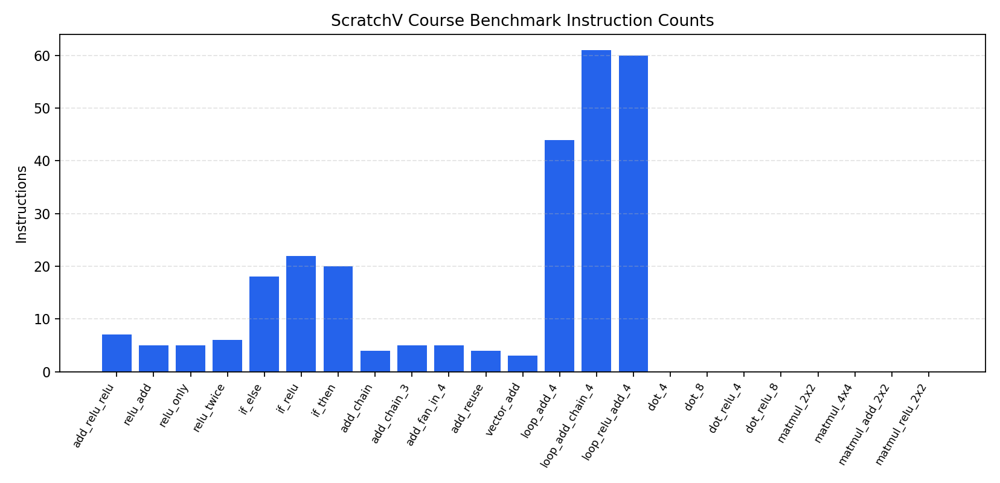

Schema 版本：2，运行模式：benchmark
类别筛选：null，名称筛选：null
用例总数：23，通过：12，失败：11
性能退化阈值：5.00%

| 用例 | 类别 | 状态 | 解释器状态 | TinyFive 状态 | 失败类型 | 编译返回码 | 编译日志 | 模拟后端 | 指令数 | Benchmark 次数 | Benchmark 停止原因 | 平均指令数 | 95% 置信区间 | 最小 | 最大 | 编译耗时(s) | 模拟耗时(s) | 总耗时(s) | 基线 | 变化量 | 变化率(%) | 退化阈值(%) | 是否退化 | 预期输出 | TinyFive 输出 | 输出匹配 | 汇编文件 |
|---|---|---|---|---|---|---|---|---|---|---|---|---|---|---|---|---|---|---|---|---|---|---|---|---|---|---|---|
| add_relu_relu | activation | PASS | PASS | PASS | null | 0 | null | tinyfive | 7 | 3 | null | 7.00 | ±0.00 | 7 | 7 | 0.0851 | 0.1467 | 0.8290 | 7.00 | 0.00 | 0.00 | 5.00 | False | 7 | 7 | True | build/topic06/add_relu_relu.s |
| relu_add | activation | PASS | PASS | PASS | null | 0 | null | tinyfive | 5 | 3 | null | 5.00 | ±0.00 | 5 | 5 | 0.0879 | 0.1541 | 0.8029 | 5.00 | 0.00 | 0.00 | 5.00 | False | 3 | 3 | True | build/topic06/relu_add.s |
| relu_only | activation | PASS | PASS | PASS | null | 0 | null | tinyfive | 5 | 3 | null | 5.00 | ±0.00 | 5 | 5 | 0.0860 | 0.1545 | 0.8123 | 5.00 | 0.00 | 0.00 | 5.00 | False | 0 | 0 | True | build/topic06/relu_only.s |
| relu_twice | activation | PASS | PASS | PASS | null | 0 | null | tinyfive | 6 | 3 | null | 6.00 | ±0.00 | 6 | 6 | 0.0864 | 0.1509 | 0.8119 | 6.00 | 0.00 | 0.00 | 5.00 | False | 4 | 4 | True | build/topic06/relu_twice.s |
| if_else | branch | FAIL | UNSUPPORTED | TIMEOUT | simulation_timeout | 0 | null | timeout | 0 | 0 | benchmark skipped: initial simulation timeout | null | null | null | null | 0.0877 | 5.0240 | 5.1174 | null | null | null | 5.00 | null | 5 | None | False | build/topic06/if_else.s |
| if_relu | branch | FAIL | UNSUPPORTED | TIMEOUT | simulation_timeout | 0 | null | timeout | 0 | 0 | benchmark skipped: initial simulation timeout | null | null | null | null | 0.0959 | 5.0234 | 5.1205 | null | null | null | 5.00 | null | 0 | None | False | build/topic06/if_relu.s |
| if_then | branch | FAIL | UNSUPPORTED | TIMEOUT | simulation_timeout | 0 | null | timeout | 0 | 0 | benchmark skipped: initial simulation timeout | null | null | null | null | 0.0892 | 5.0158 | 5.1061 | null | null | null | 5.00 | null | 13 | None | False | build/topic06/if_then.s |
| add_chain | elementwise | PASS | PASS | PASS | null | 0 | null | tinyfive | 4 | 3 | null | 4.00 | ±0.00 | 4 | 4 | 0.0876 | 0.1568 | 0.8241 | 4.00 | 0.00 | 0.00 | 5.00 | False | 9 | 9 | True | build/topic06/add_chain.s |
| add_chain_3 | elementwise | PASS | PASS | PASS | null | 0 | null | tinyfive | 5 | 3 | null | 5.00 | ±0.00 | 5 | 5 | 0.0856 | 0.1468 | 0.8015 | 5.00 | 0.00 | 0.00 | 5.00 | False | 14 | 14 | True | build/topic06/add_chain_3.s |
| add_fan_in_4 | elementwise | PASS | PASS | PASS | null | 0 | null | tinyfive | 5 | 3 | null | 5.00 | ±0.00 | 5 | 5 | 0.0850 | 0.1628 | 0.8475 | 5.00 | 0.00 | 0.00 | 5.00 | False | 10 | 10 | True | build/topic06/add_fan_in_4.s |
| add_reuse | elementwise | PASS | PASS | PASS | null | 0 | null | tinyfive | 4 | 3 | null | 4.00 | ±0.00 | 4 | 4 | 0.1064 | 0.1612 | 0.8810 | 4.00 | 0.00 | 0.00 | 5.00 | False | 10 | 10 | True | build/topic06/add_reuse.s |
| vector_add | elementwise | PASS | PASS | PASS | null | 0 | null | tinyfive | 3 | 3 | null | 3.00 | ±0.00 | 3 | 3 | 0.0854 | 0.1476 | 0.8187 | 3.00 | 0.00 | 0.00 | 5.00 | False | 5 | 5 | True | build/topic06/vector_add.s |
| loop_add_4 | loop | PASS | UNSUPPORTED | PASS | null | 0 | null | tinyfive | 22 | 3 | null | 22.00 | ±0.00 | 22 | 22 | 0.0913 | 0.1559 | 0.7475 | 22.00 | 0.00 | 0.00 | 5.00 | False | 5 | 5 | True | build/topic06/loop_add_4.s |
| loop_add_chain_4 | loop | PASS | UNSUPPORTED | PASS | null | 0 | null | tinyfive | 26 | 3 | null | 26.00 | ±0.00 | 26 | 26 | 0.0866 | 0.1573 | 0.7031 | 26.00 | 0.00 | 0.00 | 5.00 | False | 9 | 9 | True | build/topic06/loop_add_chain_4.s |
| loop_relu_add_4 | loop | PASS | UNSUPPORTED | PASS | null | 0 | null | tinyfive | 30 | 3 | null | 30.00 | ±0.00 | 30 | 30 | 0.0855 | 0.1567 | 0.7070 | 30.00 | 0.00 | 0.00 | 5.00 | False | 2 | 2 | True | build/topic06/loop_relu_add_4.s |
| dot_4 | reduction | FAIL | PASS | UNSUPPORTED | input_abi_unsupported | 0 | null | tinyfive | 3 | 0 | benchmark skipped: TinyFive input ABI unsupported | null | null | null | null | 0.0858 | 0.1493 | 0.3609 | null | null | null | 5.00 | null | 70 | 0 | False | build/topic06/dot_4.s |
| dot_8 | reduction | FAIL | PASS | UNSUPPORTED | input_abi_unsupported | 0 | null | tinyfive | 3 | 0 | benchmark skipped: TinyFive input ABI unsupported | null | null | null | null | 0.0836 | 0.1503 | 0.3586 | null | null | null | 5.00 | null | 36 | 0 | False | build/topic06/dot_8.s |
| dot_relu_4 | reduction | FAIL | PASS | UNSUPPORTED | input_abi_unsupported | 0 | null | tinyfive | 5 | 0 | benchmark skipped: TinyFive input ABI unsupported | null | null | null | null | 0.0843 | 0.1484 | 0.3574 | null | null | null | 5.00 | null | 0 | 0 | True | build/topic06/dot_relu_4.s |
| dot_relu_8 | reduction | FAIL | PASS | UNSUPPORTED | input_abi_unsupported | 0 | null | tinyfive | 5 | 0 | benchmark skipped: TinyFive input ABI unsupported | null | null | null | null | 0.0883 | 0.1534 | 0.3687 | null | null | null | 5.00 | null | 8 | 0 | False | build/topic06/dot_relu_8.s |
| matmul_2x2 | tensor | FAIL | PASS | UNSUPPORTED | input_abi_unsupported | 0 | null | tinyfive | 3 | 0 | benchmark skipped: TinyFive input ABI unsupported | null | null | null | null | 0.0863 | 0.1575 | 0.3701 | null | null | null | 5.00 | null | [[19, 22], [43, 50]] | 0 | False | build/topic06/matmul_2x2.s |
| matmul_4x4 | tensor | FAIL | PASS | UNSUPPORTED | input_abi_unsupported | 0 | null | tinyfive | 3 | 0 | benchmark skipped: TinyFive input ABI unsupported | null | null | null | null | 0.0879 | 0.1479 | 0.3601 | null | null | null | 5.00 | null | [[1, 2, 3, 4], [5, 6, 7, 8], [9, 10, 11, 12], [13, 14, 15, 16]] | 0 | False | build/topic06/matmul_4x4.s |
| matmul_add_2x2 | tensor | FAIL | PASS | UNSUPPORTED | input_abi_unsupported | 0 | null | tinyfive | 4 | 0 | benchmark skipped: TinyFive input ABI unsupported | null | null | null | null | 0.0843 | 0.1579 | 0.3648 | null | null | null | 5.00 | null | [[20, 23], [44, 51]] | 0 | False | build/topic06/matmul_add_2x2.s |
| matmul_relu_2x2 | tensor | FAIL | PASS | UNSUPPORTED | input_abi_unsupported | 0 | null | tinyfive | 5 | 0 | benchmark skipped: TinyFive input ABI unsupported | null | null | null | null | 0.0851 | 0.1587 | 0.3723 | null | null | null | 5.00 | null | [[0, 2], [0, 4]] | 0 | False | build/topic06/matmul_relu_2x2.s |